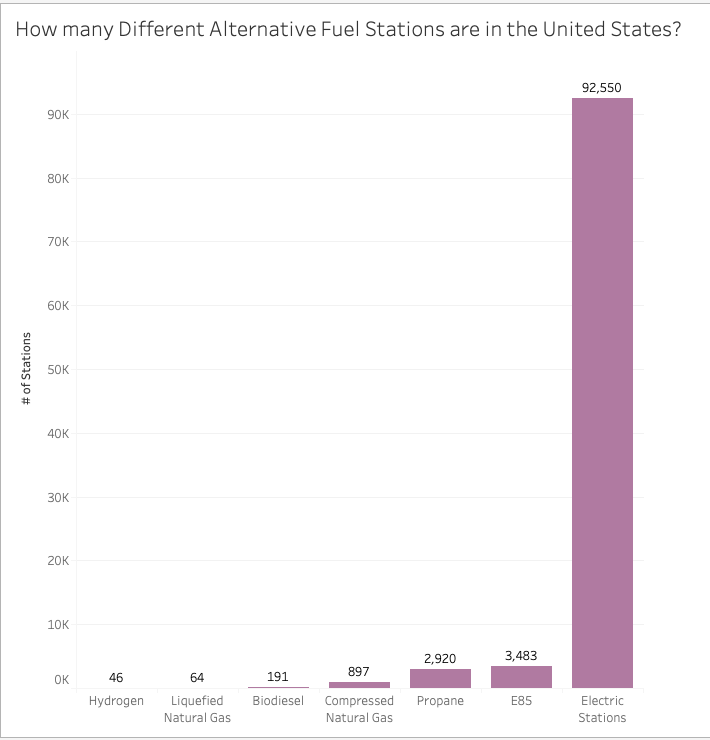
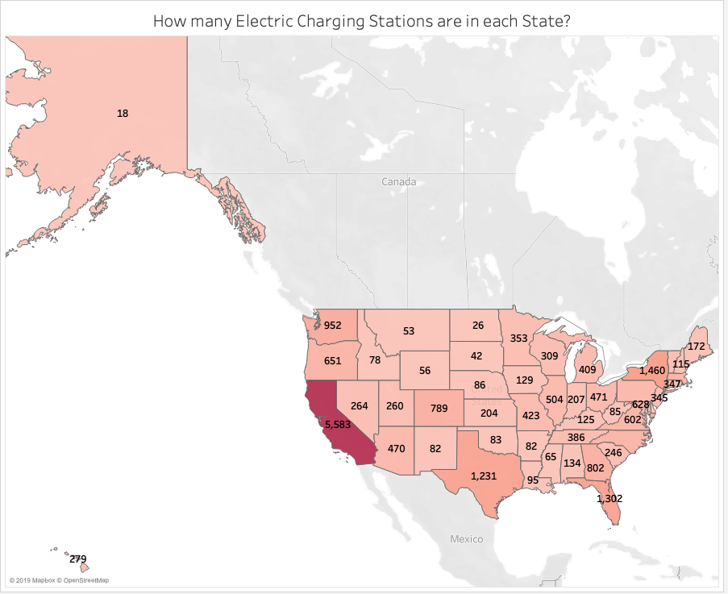
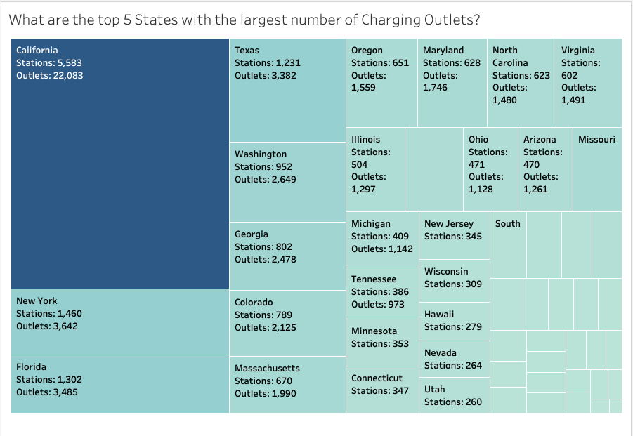
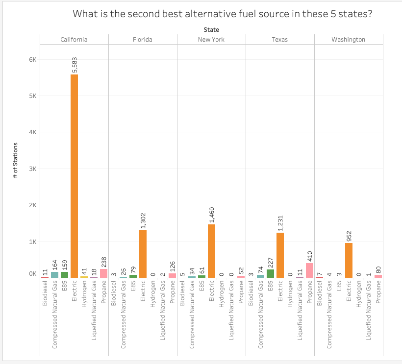
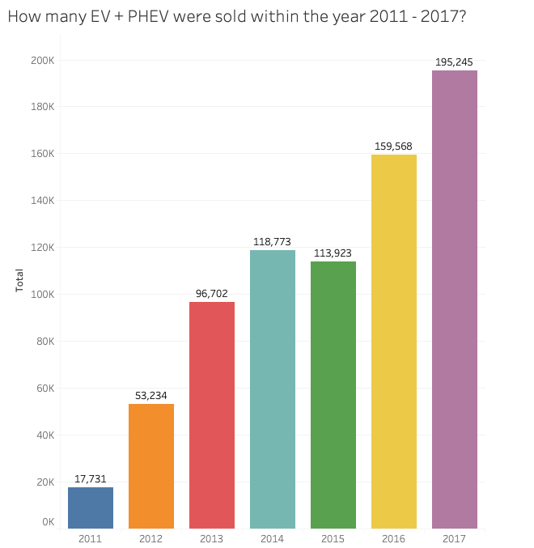
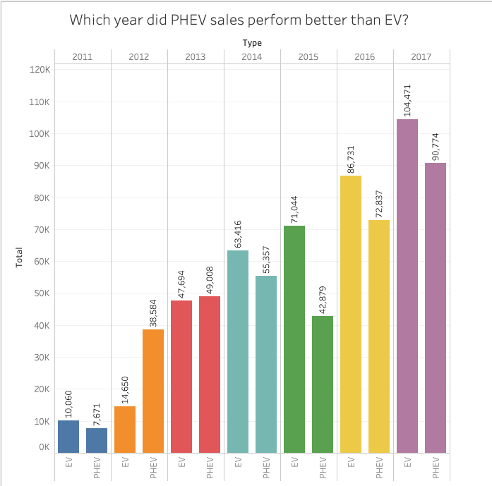
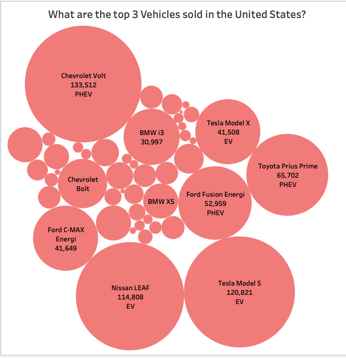
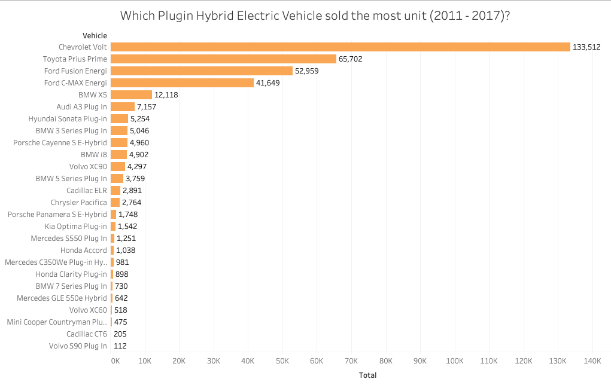
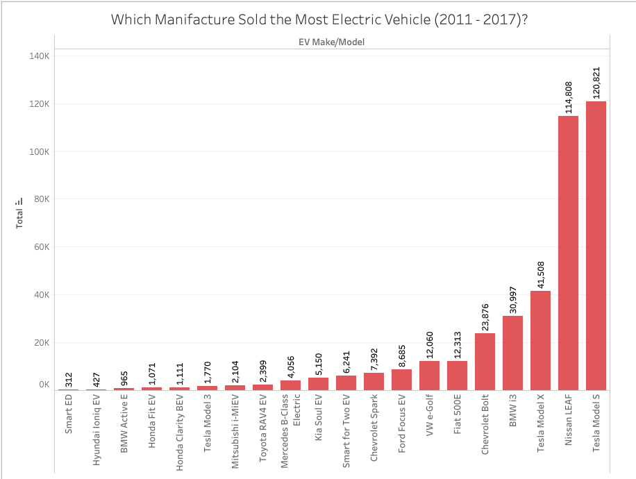
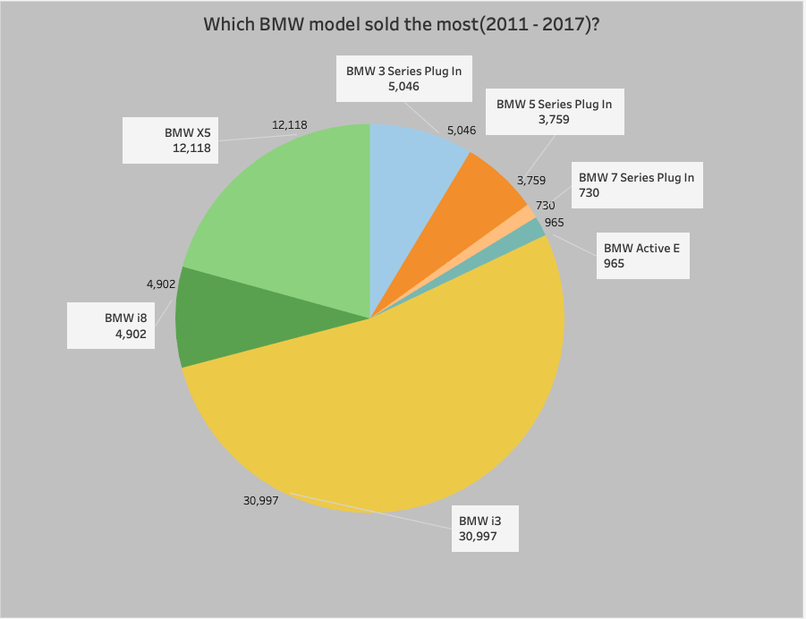

Using the data to calculate the total number of stations, I determined which fuel alternatives are the most popular in United States. There are 7 popular fuel alternatives but only one that is the most popular. As you can tell, there is a big difference between the top two options. Next we determine where all the electric charging stations are located.
Assignment 2: Exploratory Data Analysis
Pawan Chandra
Dataset
Plugin Hybrid and Electric Vehicles Sales in the United States.
This dataset contains sales number of both electric and hybrid vehicles accross United States from the year
2011 - 2017. The dataset used is provided by the U.S. Department of Engergy. I'm interested in this topic because we
are moving away from gas powered vehicles slowly and the following graphs I produced is a reflection of
the rate U.S. is changing yearly.
Number of Electric Charging Stations
A big factor when talking about electric vehicles are the number of charging stations across
and other fuel alternative.
The data is available online at: Alternative Fuel Data Center: PHEV + HV Sales Alternative Fuel Data Center: Number of Stations
Initial Analysis Questions
- How many charging stations are there in United States?
- How many electric vehicles were sold in the last few years?
- Which car manifacture produces the most model of electric vehicles?
- Are there more plugin hybrid electric vehicles?
Discoveries & Insights
I am suprised to see the number of charging stations available in other states. Living in California, I see a lot of Tesla's and Nissan Leafs and had assumed that other states must have a lot of electric vehicles as well. The data provided by the government website was very detailed and thorugh.


Graph above shows the total number of electric charging stations in each state. I used darker shades of red to format/show which state contains the most and least electric charging stations. California sticks out the most having nearly four times more than the second higest state New York. Each charging station contains different amount of power outlets similar to gas stations.

Using the numbers above, we can determine the average number of outlets per station. For example, Texas contains an average of three outlets per station. The top five states with the largest number of outlets are California, New York, Florida, Texas, and Washington.

Using the top five states from the prior graph, we can compare other fuel alternative sources by number of stations. Propane powered vehicles are more popular in Texas than it is in California. Texas also has more E85 stations than any other state. Again as you can tell from the bar grap above, California is pushing for more electric stations than any other state. This graph also shows the demand of electric vehicles (EV) or plugin hybrid electric vehicles (PHEV).

This bar graph represents the sales of EV and PHEV from 2011 - 2019. In six years, the sale of electric vehicles have eleven fold. The total number of electric vehicles sold including plugin hybrids is 755,176.

In 2011 there were more electric vehicles sold than the plugin hybrid alternatives. There were only two times within 2011 - 2017 where the sale of PHEV passed EV sales, 2012 and 2013.

The top 3 electric vehicles sold in the United States are, Chevrolet Volt, Tesla Model S, and Nissan Leaf. Both Nissan Leaf and Tesla Model S sold above 110,000 units and the Chevrolet Volt sold 133,512 units. Combining total sales for the top two EV units surpasses the top two PHEV sales.

Here we can see the total number of PHEV sales by make and model. Chevrolet sold the most unit of PHEV with 133,512 total sales. Coming far second, Toyota Prius Prime with 65,702 units sold, nearly half of what Volt did. difference.

Tesla Model S sold 120,821 units and coming close second, Nissan Leaf with 114,808 units sold. Third place goes to Tesla again with their Model X released in late 2015. In two years, Tesla Model X sold 41,508 units which is very impressive. From the last graph and this one, you can see that BMW makes the most electric vehicle.

BMW added many electric vehicles to their linup of cars. The graph above shows their model name and sales number from 2011 - 2017. The model i3 sold the most with 30,997 units. Suprisingly coming second is the SUV X5. In total BMW sold 58,517 vehicles in six years.
Summary
It is important to collect data when buying an electric car. You need to consider how many charging stations are in your city and state. While electric vehicles still have a way to go, it definetly is the future and as you can tell by the number of stations and total number of electric vehicles sold, companies are investing big in this market.